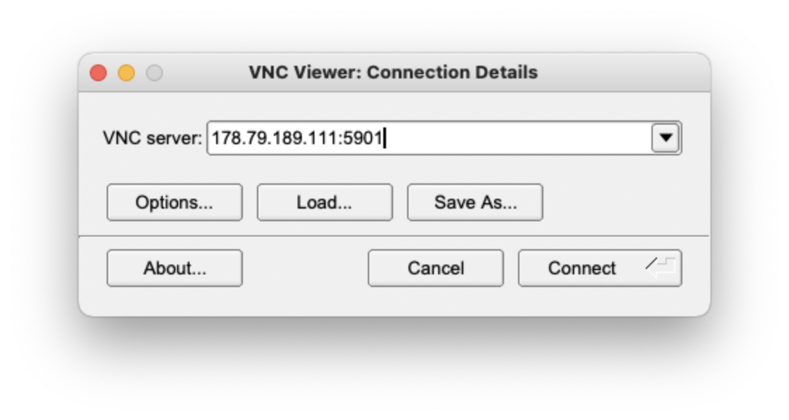

Connect to a remote machine via ssh
1. Download and install TigerVNC. Click the following link to download the appropriate installer depending on your OS:
2. Start TigerVNC and enter the IP address that you have been provided and click connect.
3. Enter the password: genomics
4. You should now see your virtual desktop and can start using it.